Sense & System
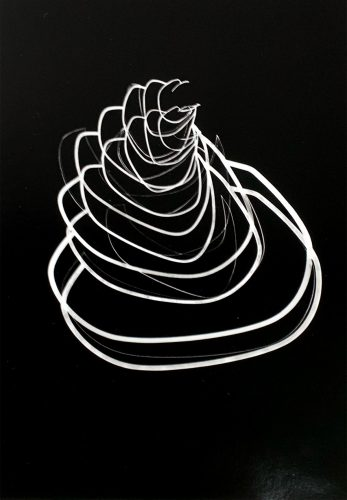
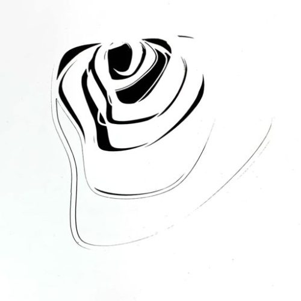
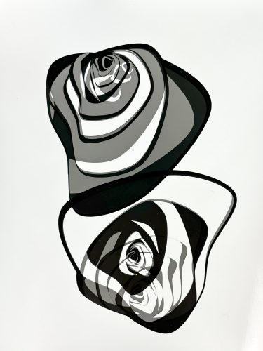
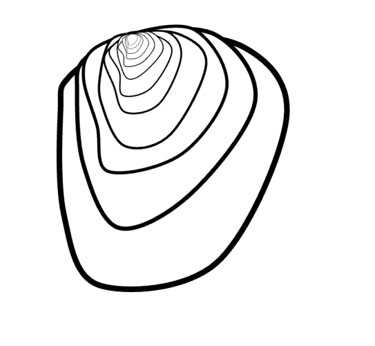
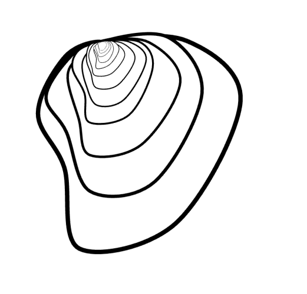
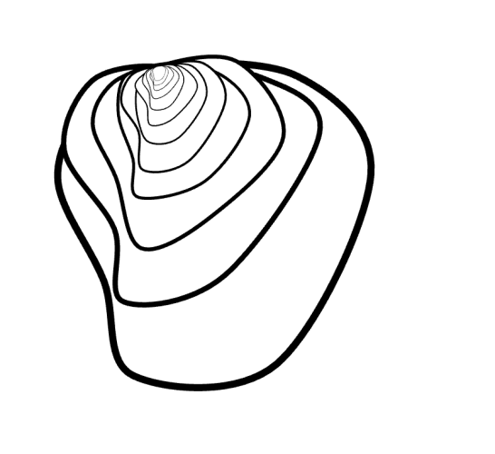
I am interested in the relationship between natural and algorithmically generated forms. I write a software script in p5js to generate a mathematical image. I then cut that image from a variety of materials (cardboard, acrylic, wood, fabric) and layer the cuts onto photo paper in a traditional darkroom. In this series I am inspired by my young daughter’s fascination with the circular form and her efforts to master roundness. I made a series of attempts to write a software script able to mimic her uniquely imperfect circles. Each of these scripts gave me interesting shapes, but none that look quite like a child’s drawing of a circle. I became interested in the gap between the hand and the machine, and what we might discover there. I took the shapes and repeated them (using code), then used a CNC machine to cut them out of a variety of materials. In a traditional darkroom I used the cutouts to make photograms; cameraless photographic prints on silver gelatin paper.
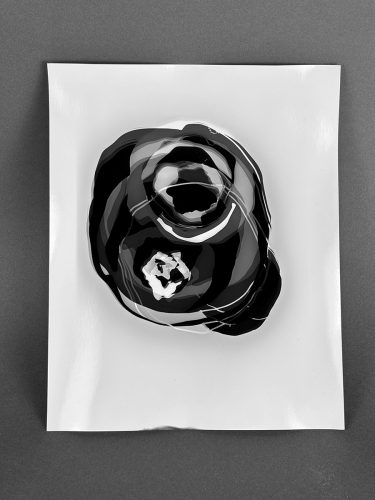
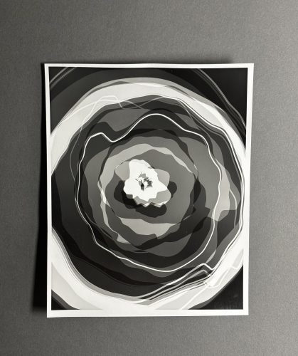
As I exposed the paper, I moved the shapes around, returning to the intuitive and imperfect technique that my daughter uses to draw her circles. This is a slow, inefficient, and playful process driven by materials rather than theory. As the image moves between the machine and the hand, the process goes out of my control. There is an element of uncertainty in the coding– I don’t know exactly what shape will emerge from each series of points. I likewise don’t know what shapes will emerge when I put the paper into the developer, because I can’t see the mark I’m making when I move the stencils over the photographic paper. The amalgam of the human and the algorithmic generates unique and surprising prints.
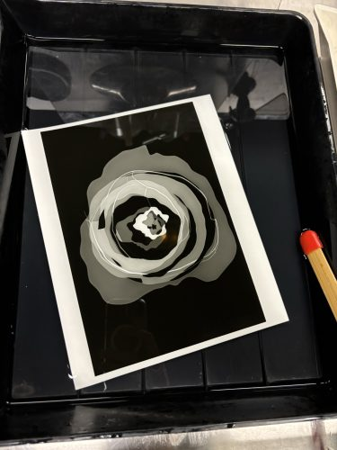
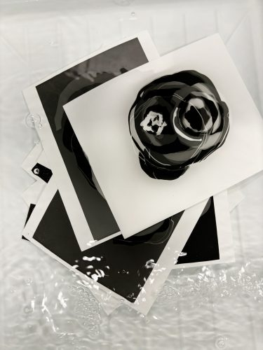
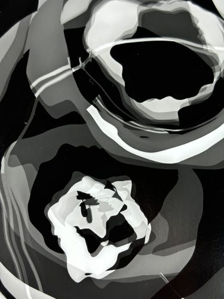
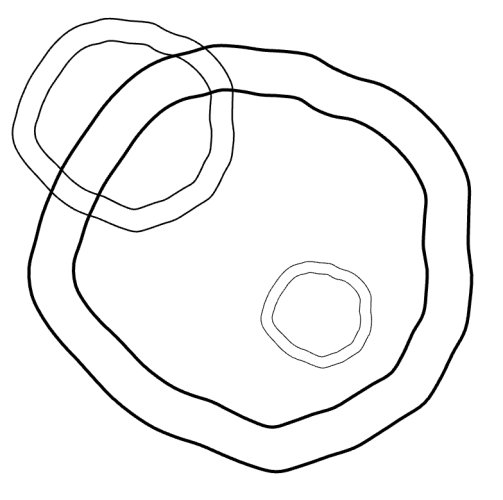
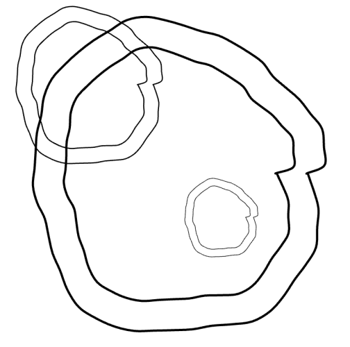
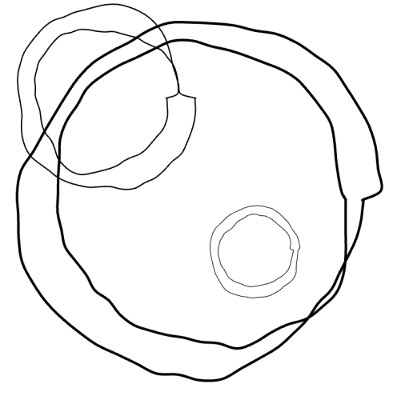
The shapes that emerge from this process read as concurrently handmade and machine-made. They look like they could be found in nature, but there is also something unnatural about them. The process harnesses the wonder inherent in a child’s paradoxical determination to make a perfect circle that yields a beautifully imperfect one. The machine’s approximation of the imperfect circle guided by the physical hand of the artist generates new and intriguing images. The process and the resulting images form a small contribution to the celebration of shapes in the intersecting worlds of nature and technology.
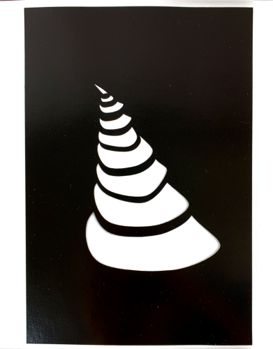
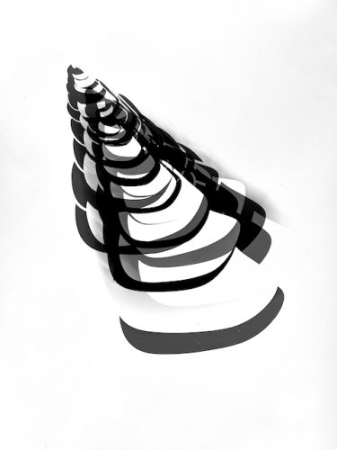
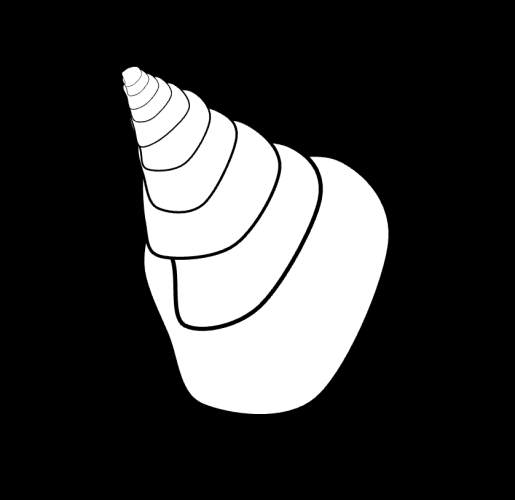
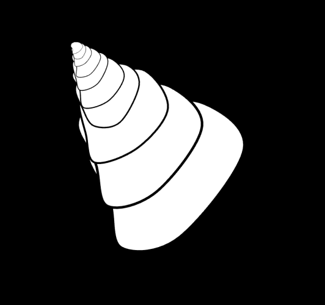
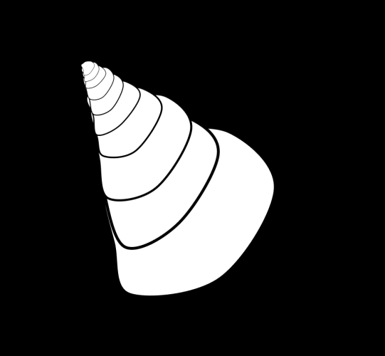